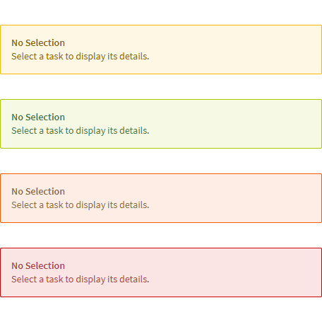
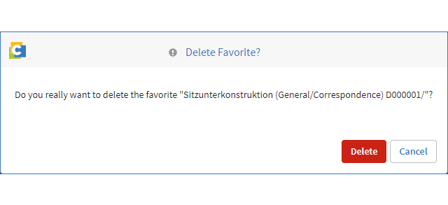

Feedback Messages¶
Introduction¶
Feedback messages are responses of the application when the user interacts with it. Most of the CRUD actions (create, read, update and delete) should trigger feedback messages to inform the user about the state of her action.
It is advised to express messages in a simple and plain language while being informative and guiding.
This chapter educates about the different states in which feedback messages are reasonable. Messages of the same type can be displayed differently to accommodate the specific scenario. Refer to the chapter Feedback Patterns to learn more about using patterns and components in the recommended way.
Message Categories¶
- Empty
- Error
- Warning
- Success
- Information
Empty Messages¶
Empty messages are triggered when a page or component cannot display data. This can occur when something is used for the first time (e.g. Dashboard), no data is available (e.g. no preview image available), a user cleared all items of a page or component (e.g. Tasks) or something went wrong (e.g. a page couldn’t be found). If the user is able to fill the space with content, indicate the potential next step by placing an action button together with the text message (e.g. “add a widget” button in the Dashboard application)
Use when …
- a page can‘t be found (e.g. 404 messages)
- a page has no content to show (e.g. the user uses it for the first time or emptied the content )
- a component on a page has no content to show (e.g. no preview available or no search results)
Error Messages¶
Error messages are triggered when the application fails to execute an action. They communicate clearly what is happening and describe how to resolve the problem (if possible). If problems are critical and should be resolved before proceeding, use modal dialogs to interrupt the user’s flow and lead her to focus on the problem. Otherwise use inline-messaging or notifications to avoid disturbing the user unnecessarily.
The key color for error messages is $elements-danger. See the Color guidelines for more information about how to use the Elements color palette.
Use when …
- the user input some invalid data and the system is not able to identify it correctly (e.g. incorrect formatting of date).
- the user submits a form which has input issues associated to one or more fields (e.g. mandatory fields are not filled).
- the user wants to submit a form or execute an operation but the backend prevents it (e.g. user-exits prevent it).
- the content of a component couldn‘t be (completely) loaded because of certain cirumstances.
- a page is not accessible (e.g. role-conflict).
- the system encounters an error which may affect the user‘s current session (e.g. network issues).
- the system encounters a random, unkown error that breaks the current session
Warning Messages¶
Warning messages are triggered when the user has to be informed about an action or condition that might cause problems or unexpected results in the near future. They also lower the risk that the user is doing something unintentional which can‘t be easily reversed.
The key color for warning messages is $elements-warning . See the Color guidelines for more information about how to use the Elements color palette.
Use when …
- the user leaves a page / form without explicitly saving changes.
- the user cancels a progressing system process (e.g. uploading, saving, exporting, …).
- the user‘s action or input might be destructive.
- an issue affects the current session.
Success Messages¶
Success messages are triggered when the user or system initiated event is succesfully completed. Please note, that it is not recommended to communicate every success of the system but only the ones that need users‘ attention.
The key color for warning messages is $elements-success. See the Color guidelines for more information about how to use the Elements color palette.
Use when …
- the user has successfully created or changed something (e.g. new document).
- a user-initiated process was successfully completed (e.g. uploading, exporting, …).
- the system has automatically done something the user should know (e.g. notified project members about a status change).
Information Messages¶
Information messages are triggered to notify the user about assistive but not critical information for proceeding further.
The key color for warning messages is $elements-information. See the Color guidelines for more information about how to use the Elements color palette.
Use when …
- a user-initiated process or creation/update is successful with certain constraints which is kept transparent to the user (e.g. system found objects according to search criteria, but only 1000 of 2000 can be displayed).
- the user is new to the system and has to be educated about the functions (e.g. walkthrough).
- the system has new functions to be presented.
Feedback Patterns¶
The Elements UI maintains a couple of components for displaying messages. Below you’ll find a collection of the most common patterns and how to use them efficiently.
Throbber¶
If the system loads data or performs an action that takes longer than one second, use the throbber component to emphasize the progressive state the system is in.
Learn more about this component: Throbber
Dos and Don’ts
DO use a throbber if the user has to wait longer than one second to see the content.
DO NOT use a throbber if the process takes longer than 3 seconds. Use a progress bar instead.
Banner¶
The banner container is colored to highlight the semantic of a message and is displayed near the relevant control or input. Use this component for visible messages, which inform the user without interrupting her.
Learn more about this component: BannerContainer
Dos and Don’ts
DO keep text in banners short.
DO make sure to use the correct semantic color (see Color guidelines).
DO display the banner above or next to the element it relates to.
Notification¶
A motification is a banner that appears in the top-right corner of the interface after a user’s action. It can be closed by the user or fades out automatically after three seconds. A notification is coloured to highlight the semantic of a message. Use this component for informative but non-interruptive messages.
Dos and Don’ts
DO stack notifications of different types.
DO make sure to use the correct semantic color (see Color guidelines).
DO NOT display a notification after the user created an object and was brought to its page, in order to avoid redundancy.
DO NOT display a notification after inline-editing. It is sufficient if the user sees the modification in the default reading state of an input.
DO NOT display a notification after the user moved to another page. Notifications are only relevant for the page they were initially displayed.
Modal¶
In the context of feedback messages, a modal is used to communicate a critical error (e.g. that something couldn’t be completed) or to confirm a user action (e.g. deleting an object).
Dos and Don’ts
DO use modals to communicate critical errors only.
DO use alert modals as they behave differently from the general modal pattern.
DO use semantic colors for the text buttons that match with the color guidelines.
DO make sure that the text button match with the title and content.
DO NOT use modals for success messages. Use a notification instead.